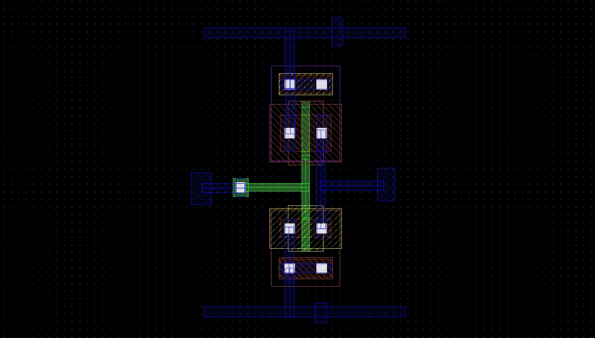
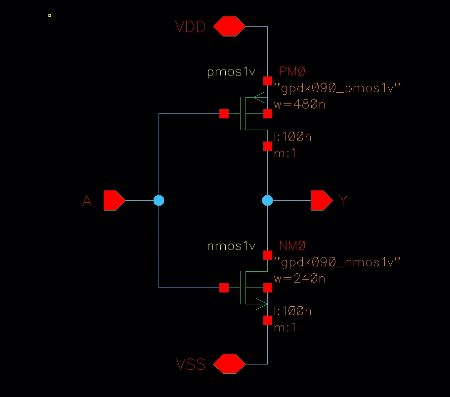
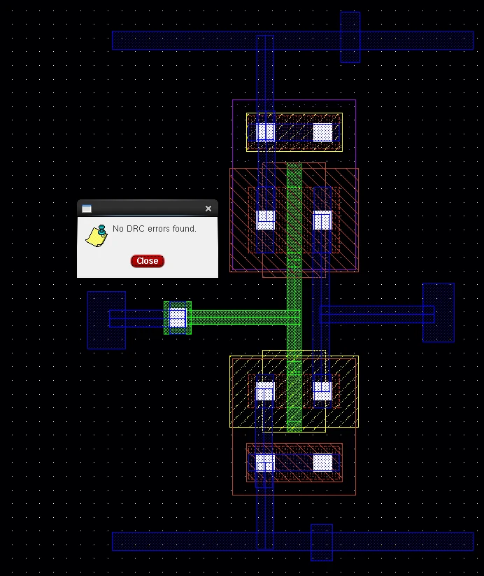
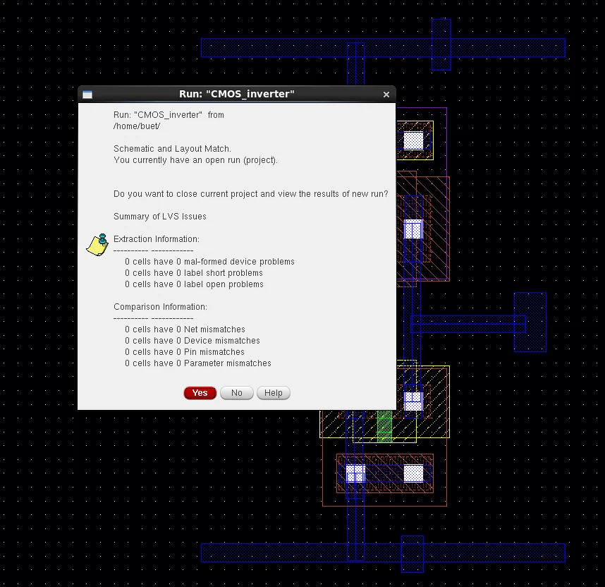

Layout and Verification
CMOS Inverter Full-Custom Layout
Cadence Virtuoso · GPDK 90 nm nmos1v/pmos1v · Assura DRC / LVS · ViVA
The foundation project for the layout work above: one NMOS (240 nm / 100 nm) and one PMOS (480 nm / 100 nm) laid out with VDD/VSS Metal1 rails, poly-to-Metal1 input contact, body contacts and A/Y/VDD/VSS pins.
0 errors
DRC
Assura
Match
LVS
Schematic and layout
2 : 1
PMOS : NMOS width
480 nm : 240 nm, to balance pull-up and pull-down

Layout steps
PMOS placed above NMOS; source of PMOS to VDD and NMOS to VSS on Metal1 rails; drains joined as Y; gates joined as A through a poly-to-Metal1 contact; body contacts tied to VDD and VSS; pins A, Y, VDD, VSS added.

Verification


Scope and limitations
- Single-cell exercise: no parasitic extraction or post-layout simulation.
- Inverter behavior was checked in simulation at schematic level.